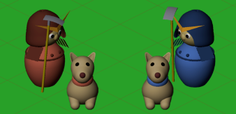
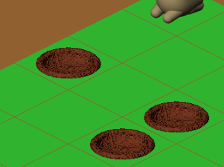
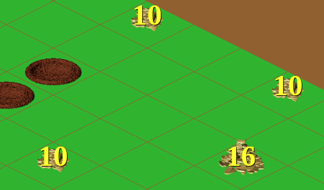
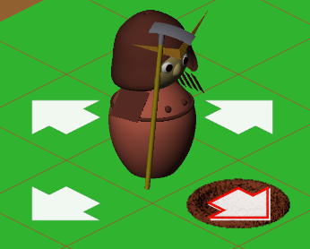
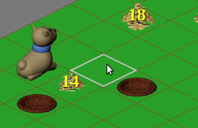
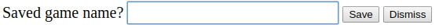
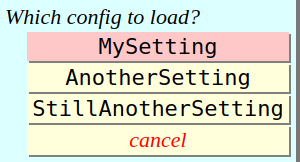
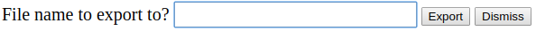
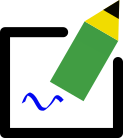
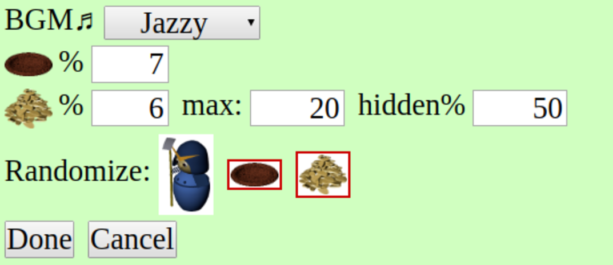

情報処理学会プログラムコンテスト委員会
2019/10/07
SamurAI Dig Here ページは SamurAI Dig Here ゲームのためのページです.
SamurAI Dig Here ページを使って以下のことができます.
下図はページの表示画面例です.
競技場は格子状に並んだセルに分けられています.
両チームにはそれぞれに侍ひとりと犬一匹, 合計4エージェントが属し, 競技場のセルのどれかにいます. 侍は各ステップでその位置の四近傍のセルのどれかに, 犬は八近傍セルのどれかに動けます. 動かずに同じセルに留まることもできます.
初期状態では, 競技場のセルのいくつかに穴が空いています. 侍も犬も穴があるセルには行けません.
侍は四近傍のどれかのセルに穴があるとき, その穴を埋めることができます. また, 四近傍のセルに新たに穴を掘ることができます. 犬には穴埋めや穴掘りはできません.
セルのいくつかには埋蔵金があります. 埋蔵金は当初はその位置や量がわかっているものも, 隠されているものもあります. ゲームの目的は相手方より多くの埋蔵金を掘り出すことです. 侍は近傍のセルに穴を掘れば, そこにある埋蔵金を掘り出すことができます.
犬は埋蔵金のあるセルの八近傍セルに来ると, 埋蔵金の存在と量がわかります. 埋蔵金のあるセルにいずれかの犬が来ると, その埋蔵金の位置と量がすべてのエージェントに知らされます.
画面上部の読み込みボタン
 をクリックすると, ファイルを選択するウィンドウを表示します.
そこでファイルを選ぶとファイル中のゲーム記録を読み込めます.
をクリックすると, ファイルを選択するウィンドウを表示します.
そこでファイルを選ぶとファイル中のゲーム記録を読み込めます.
いったんゲーム記録を読み込んだ後で更新したとき, 更新後のファイルを読み込もうとしてもうまくいかないことがあります. それはブラウザが最初に読み込んだときのキャッシュ, つまり更新前のゲーム記録を使うからです. この問題は, ブラウザの機能でウェブページ全体を読み込むことで解決できるでしょう.
プレイモードの初期状態は自動プレイモードになっています. 自動プレイモードでは, 読み込んだゲーム記録を可視化できます. ゲーム記録中の最後のステップ以降のステップは, 内蔵するプレイヤを用いてエージェントの動作を選んで表示を進めます. 選んだ動作はゲーム記録に追加します.
ゲームの進行は画面上部のいくつかのボタンを用いて制御します.
画面上部左側のボタンとその機能は以下のとおりです.
画面上部右側のボタン類とその機能は以下のとおりです.
手動プレイモードではいずれか片方の侍を手動で制御できます.
画面右上部の手動プレイボタン をクリックすると手動プレイモードになります.
最初のクリックで赤の侍が手動制御になり, ボタンの色は赤 . になります. 他のエージェント, つまり犬や青の侍は内蔵プレイヤが制御します. もう一度クリックすると青の侍が手動制御になり, ボタンの色は青 . になります. 赤の侍や犬の制御はコンピュータがすることになります. さらにもう一度クリックすると, 自動プレイモードに戻り, ボタンの色も元の白色に戻ります.
手動実行では, 制御対象の侍の周囲のセルに可能な動きを示す矢印が表示されます. 穴があるセルの上の矢印は赤い輪郭を表示します. 矢印のあるセルをクリックすることで, 以下を指示します.
侍の動作はキーボードのキーを押すことによっても指示できます. キーとその意味は以下のとおりです.
| h w ← | 左下 (↙) のセル |
|---|---|
| j s ↓ | 右下 (↘) のセル |
| k n ↑ | 左上 (↖) のセル |
| l e → | 右上 (↗) のセル |
| . スペース | 何もしない |
手動ステップ実行をすると, それより先のステップのゲーム記録は破棄し, 手動ステップ実行の結果がゲーム記録中の最終ステップになります.
手動プレイモード中でも自動プレイモードと同様の自動実行もできます. ステップ再生ボタン では 1 ステップの自動実行, プレイボタン では連続自動実行になります. いずれの場合も, 自動実行の終了後はプレイモードは手動のままです. 巻戻しボタン での初期状態への巻戻しもできます.
画面上部の編集ボタン を押すと編集モードに入ります. 編集モードでは競技場設定の編集, 保存や, 保存済みの設定の読み出しができます.
編集モードに入ると, 表示は以下のように変わります.
 編集モードではマウスポインタがあるセルの外周が白く表示され, そのセルに対しての設定をマウス操作で編集できます. なんらかの設定変更を施すと, ゲーム実行記録をすべて破棄します.
エージェントがあるセルでマウスボタンを押し下げて別のセルにドラッグすると, エージェントを移動できます. ただし埋蔵金があるセルや穴のあるセルには移動できず, 直前にマウスカーソルがあったセルに移動します.
マウスボタンを押し下げるときにシフトキーが押されていると, エージェントは時計回りに回転します. これによりエージェントの初期状態での見た目が変わりますが, そのことはゲームのプレイには何の影響も及ぼしません.
埋蔵金のあるセル上でマウスクリックすると, 埋蔵量を増減できます. シフトキーを押さずにクリックすれば埋蔵量は 2 だけ減ります. 埋蔵量が 0 になったセルは埋蔵金のないセルになります. シフトキーを押しながらクリックすれば埋蔵量は2だけ増えます. 埋蔵金のない平坦なセル上でマウスボタンをクリックすると, そのセルは埋蔵量 2 の埋蔵金があるセルになります.
埋蔵金のあるセル上でコントロールキーを押したままマウスクリックすると, 埋蔵金の初期状態を秘匿と公開の間で切り替えます. 秘匿埋蔵金の埋蔵量は赤, 公開埋蔵金は黄色で表示します.
穴のあるセルでマウスをクリックすると, 穴は埋められす. 穴もエージェントも埋蔵金もないセルをクリックすると, そのセルに新たに穴を作ります.
競技場の1辺のセル数は拡大ボタン をクリックすればひとつ増え, シフトキーを押しながらクリックすればひとつ減ります. ただし, 最小6, 最大20の範囲を越えることはできません. 競技場の縮小でなくなるセルにあったエージェントは別のセルに移動します. なくなるセルやエージェントの移動先セルの穴や埋蔵金もなくなります.
最大ステップ数は編集モード中に時計アイコン
 上のマウスクリックやホイールの回転で増減できます.
クリック時にシフトキーを押していれば最大ステップ数はひとつ増え,
押していなければ減ります.
ホイールを上に回せば増え, 下に回せば減ります.
操作時にコントロールキーを押していれば, 増減量は10倍になります.
最大ステップ数を 10 より小さくはできません.
上のマウスクリックやホイールの回転で増減できます.
クリック時にシフトキーを押していれば最大ステップ数はひとつ増え,
押していなければ減ります.
ホイールを上に回せば増え, 下に回せば減ります.
操作時にコントロールキーを押していれば, 増減量は10倍になります.
最大ステップ数を 10 より小さくはできません.
左上部にあるランダム設定ボタン をクリックすることで, 競技場を新たなランダムな設定にすることができます.
シフトキーを押してクリックすると, エージェントや穴の位置を変えずに, 埋蔵金 (公知のものも隠されたものも) だけがランダムに再設定します.
プレイログ抹消ボタン をクリックすると, 競技場の設定を変えずにプレイの記録だけを抹消します. これはプレイログを除いて競技場の設定を保存したり書き出したりする際に用います.
現在のゲーム状態 (競技場の設定と, プレイの記録) はブラウザの記憶領域に保存し, 後で読み出すことができます. この記憶領域はブラウザ内に保存するもので, ページを読み込み直したりブラウザを立ち上げ直してもなくなりませんが, 他のシステムではもちろん, 同じシステムの他のブラウザからも読み出せません.
画面上部の保存ボタン をクリックすると, 保存名の入力画面を表示します. ここで名称を入力すれば現在ゲーム状態がその名称で保存されます. 同じ保存名のゲーム状態があれが上書きします.
画面上部の読み出しボタン をクリックすると, 保存名の一覧を表示します. この中から読み出したいものを選ぶと, そのゲーム状態が読み出されます.
画面上部の削除ボタン をクリックすると, 保存済みゲーム状態の名称の一覧を表示します. この中から削除したい状態の名称を選ぶと, そのゲーム状態は記憶から削除されます.
ファイル出力ボタン をクリックすると, 出力先ファイル名を入力するウィンドウを表示します.  そこで入力したファイル名のファイルに現在のゲーム状態を書き出します. ファイル名に拡張子がついていなければ, 自動的に拡張子 ".dighere" を付けます.
画面上部の編集終了ボタン  をクリックすれば編集モードは終了します. ゲームは編集結果の設定の初期状態になります.
設定ボタン のクリックで表示される設定ダイアログで, 種々の細かな設定を行うことができます.
自動プレイ時に流す曲を数種類用意しています. すべて童謡「はなさかじじい」のそれぞれ異なるアレンジです. "BGM" というラベルのセレクタで曲を選ぶことができます. 音楽がいらなければ "MUTE" を選んでください.
穴のアイコンの右のフィールドで, ランダム設定時に競技場のセルに穴がある確率を設定することができます.
埋蔵金アイコンの右のみっつのフィールドは, ランダム設定時の埋蔵金の設定を制御するためのものです. 最初のフィールドは競技場のセルに埋蔵金がある確率を設定します. 次の "max" というラベルのフィールドは, ひとつのセルにある埋蔵金の最大量を設定するものです. これは正の偶数でなければならず, 負の数や奇数は自動的に調整します. 一番右の "hidden%" というラベルのフィールドは, 埋蔵金が秘匿されている確率を設定するものです.
"Randomize" というラベルの右のみっつのアイコンは, ランダム設定時に何を設定するかを指定するものです. 赤い枠で囲まれているアイコンに対応するものをランダムに設定し, 赤い枠のないものは元のままにします. これらのアイコンをクリックすると枠をつけたり消したりできます.
"Done" ボタンをクリックすると設定変更を反映します. "Cancel" ボタンをクリックすると設定変更は破棄します. どちらでもダイアログは閉じます.